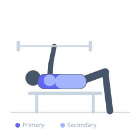
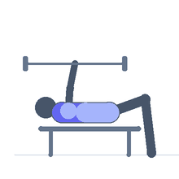

Exercise guide / Single-Arm Landmine Chest Press with Rotation
Single-Arm Landmine Chest Press with Rotation
A landmine pressing variation that integrates a rotational torso component with the unilateral press. As the arm extends along the barbell's arc, the torso rotates to follow, loading the pectoralis major, anterior deltoid, and serratus anterior while simultaneously training anti-rotation core strength and shoulder stability through a sport-relevant movement pattern.
Primary muscles
pectoralis major sternal
pectoralis major clavicular
Secondary muscles
deltoid anterior
internal oblique
external oblique
Stabilizers
transverse abdominis
infraspinatus
Equipment
Standard Barbell


Starting position
- Anchor a barbell in a landmine attachment or corner. Stand facing the barbell, gripping the sleeve end with one hand at chest level. Stand in a slight stagger stance.
Setup
- Load light plates on the barbell or use the bar alone. Position the landmine so the bar end is at chest height when held at the start position.
Steps
- Step 1: Hold the bar end at chest level, working arm's elbow bent, body centered.
- Step 2: Begin the press by extending the arm along the barbell's arc (upward and forward). Simultaneously rotate the torso toward the pressing side.
- Step 3: At full arm extension, the torso has rotated and the arm is extended fully along the bar's arc.
- Step 4: Rotate back and return the bar to the start position under control. Repeat all reps then switch sides.
Coaching cues
- Let the torso follow the press — don't restrict the rotation
- Press through the chest, not just the shoulder — initiate from the pec
Breathing
- Exhale during the press and rotation. Inhale on the return.
Range of motion
- Full arm extension along the bar's arc. Torso rotates approximately 30–45 degrees through the movement.
Tempo
- 2-0-2-1
Common mistakes
- Not rotating the torso — the rotation is a deliberate part of the exercise, not a mistake to prevent
- Leaning excessively forward — the rotation comes from the torso, not a forward lunge
- Pressing too fast and losing control of the bar's arc
Safety
- Ensure the landmine anchor is stable before pressing
- Use moderate weight — the rotational component creates unfamiliar loading on the shoulder
Training
- hypertrophy: 8–12 reps
- power: 4–6 reps
- hypertrophy: 3–4 sets
- Rest: {'hypertrophy': 90}